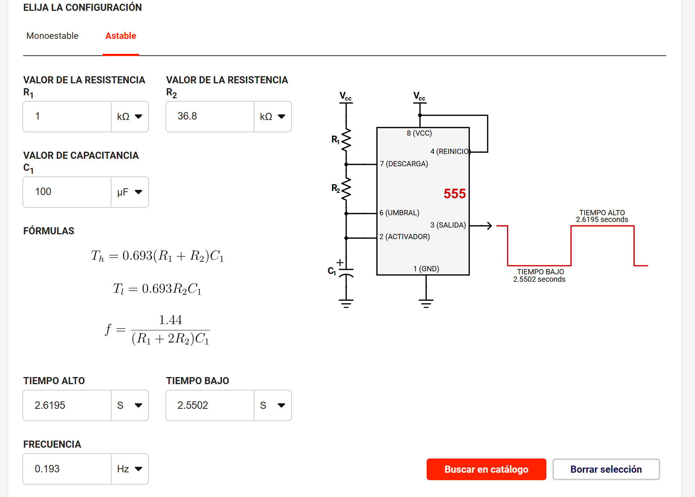

LED intermitente con temporizador 555 en modo astable
1) Resumen
Nombre del proyecto: LED intermitente con temporizador 555 en modo astable
Equipo / Autor(es): José Ismael Guerrero Román y Gerardo Esquivel De Luna
Curso / Asignatura: Introducción a la Mecatrónica
Fecha: 06/09/25
Descripción breve: Se diseñó e implementó un circuito astable con el temporizador 555 para generar el parpadeo de un LED en un intervalo regulable de 1 a 5 segundos, aplicando conceptos de electrónica analógica.
2) Objetivos
General:
Implementar un circuito con temporizador 555 en modo astable para controlar el parpadeo de un LED con un intervalo ajustable de tiempo.
Específicos:
- OE1: Calcular y seleccionar resistencias y capacitores adecuados para obtener un rango de parpadeo de 1 a 5 segundos.
- OE2: Ensamblar el circuito en protoboard verificando las conexiones correctas.
- OE3: Comprobar experimentalmente el funcionamiento del LED intermitente y documentar los resultados.
3) Alcance y Exclusiones
Incluye:
- Diseño del circuito astable con 555.
- Cálculo de tiempos de encendido/apagado del LED.
- Montaje en protoboard y comprobación de funcionamiento.
- Evidencia en fotos y videos del resultado.
No incluye:
- Diseño de PCB definitivo.
- Control de más de un LED o integración con microcontroladores.
- Alimentaciones distintas a 5 V o 9 V.
4) Requisitos
Software:
- No se requirió software específico, solo calculadora electrónica básica para el dimensionamiento de componentes.
Hardware:
- CI NE555 (temporizador).
- Resistencia R1 = 1 kΩ.
- Resistencia R2 = 6.8 kΩ + potenciómetro de 30 kΩ.
- Capacitor electrolítico C = 100 µF.
- Resistencia limitadora para LED (330 Ω a 820 Ω según Vcc).
- LED rojo.
- Protoboard y cables de conexión.
- Fuente de poder de 5 V o 9 V.
Conocimientos previos:
- Electrónica básica: resistencias, capacitores, LED, temporizador 555.
- Cálculo de tiempos en modo astable.
- Manejo de protoboard y multímetro.
